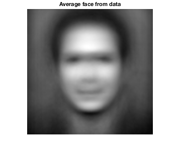

Eigenfaces Explorative Analysis
The following MATLAB code reads in facial images (a subset of the images provided at https://cyberextruder.com/face-matching-data-set-download/) and performs analysis on the dataset.
Contents
%Begin by reading in dataset: faces = csvread('faces.csv',1,1); for i=1:1000 faces(i,:) = mat2gray(faces(i,:)); end %Display the average face of data: avg_face = zeros(10000,1); for i=1:10000 avg_face(i) = sum(faces(:,i))/1000.0; end avg_face = mat2gray(avg_face); figure imshow(imresize(reshape(avg_face,[100,100]),[500, 500]),[]); title('Average face from data');
PCA of Faces
Here we perform PCA on the face dataset and view the first 16 eigenfaces.
[coeff,score,latent,tsquared,explained] = pca(faces);
faces_pca = {};
for i=1:16
faces_pca = [faces_pca,uint8(255*mat2gray(reshape(coeff(:,i),[100,100])))];
end
% First sixteen principal components:
figure
montage(cell2mat(faces_pca))
The first principal component appears to only be an indicator of an image's contrast between the face and background, not as a facial identifier. Thus in constructing a facial recognition algorithm (as we do in a later section), it may be helpful to neglect the first few eigenfaces in order to create a more successful match.
Plot of the Proportion of Variance Explained by Eigenfaces
%Analyze Principal Components: figure plot(cumsum(explained),'ro','MarkerSize',1); title('Proportion of Variance Explained (%)'); xlabel('Principal Components'); ylabel('Cumulative Proportion of Variance Explained');
Image Compression
The following is an example of how PCA can be used for the purpose of image compression. We begin with a picture of Alexander Haig and progressively use fewer and fewer principal components (note that 125 components are needed to account for ~90% of the variance - can be seen in the PVE plot above)
k_vals = [10,50,125,250,500,999]; selection = 250; %Current selection is Alexander Haig, but can be %changed to any value in range [1,999] %188 is Alan Tudyk for i=1:6 k = k_vals(7-i); z = coeff(:,1:k); V = score(:,1:k); approx = z*V.'; approx_face = approx(:,selection) + avg_face; approx_face = imresize(reshape(approx_face,[100,100]),[500 500]); figure imshow(approx_face,[]); title(['k = ' num2str(k)]) end
Facial Recognition
An attempt to use eigenfaces for facial recognition using external test image. Inspired by the paper Face Recognition Using Eigenfaces http://www.cs.ucsb.edu/~mturk/Papers/mturk-CVPR91.pdf. We begin with an image of Alexander Haig (taken from https://commons.wikimedia.org/wiki/File:Alexander_Haig_photo_portrait_as_White_House_Chief_of_Staff_black_and_white.jpg):
{kind=link}
first_pc = 6; num_pcs = 125; haig = imread('Haig.jpg'); haig = imresize(haig(1:637,:),[100, 100]); haig_vec = mat2gray(double(reshape(haig,[10000,1]))); adjusted_input = mat2gray(haig_vec - avg_face); proj_tmp = coeff.'*adjusted_input; proj = proj_tmp(first_pc:num_pcs,1); min_dist = norm(score(1,first_pc:num_pcs).' - proj); min_img = 1; for i=1:1000 if norm(score(i,first_pc:num_pcs).' - proj) < min_dist min_dist = norm(score(i,first_pc:num_pcs).' - proj); min_img = i; end end fprintf('Smallest norm found is %f and norm for actual photo is %f\n\n\n',... min_dist, norm(score(250,first_pc:num_pcs).' - proj)); figure imshow(imresize(haig, [350, 350])); title('Input Picture'); figure imshow(imresize(reshape(faces(250,:),[100,100]), [350, 350])); title('Desired Picture in Dataset'); figure imshow(imresize(reshape(faces(min_img,:),[100,100]), [350, 350])); title('Found Picture in Dataset'); foundImageLoadings = score(min_img,first_pc:first_pc+9).'; desiredImageLoadings= score(188,first_pc:first_pc+9).'; inputImageLoadings = proj(1:10); T = table(inputImageLoadings,desiredImageLoadings,foundImageLoadings); disp(T);
Smallest norm found is 13.785063 and norm for actual photo is 18.251573
inputImageLoadings desiredImageLoadings foundImageLoadings
__________________ ____________________ __________________
1.4152 0.88766 1.6577
5.4855 -0.083183 1.894
1.3098 5.2557 1.9986
1.7332 5.4991 2.4384
1.6154 2.1447 4.1668
-3.63 -0.53483 -0.91129
-1.8008 0.23071 -1.6074
2.8151 -0.045513 3.4033
-1.2986 0.23364 -1.2748
-2.4276 1.4494 -4.6057
The image was not successfully found, but interestingly enough an image was found that shares relatively similar features to that of Haig. In particular the eyes, brows, and pursed lips have a resemblance to one another among the three images. Proceeding in the same manner, we input a picture of Alan Tudyk to see if this performs better than that of the Haig example (image taken from Tudyk's IMDB page).
first_pc = 5; %Experimentally found to be the best starting PC num_pcs = 125; %tudyk = imread('Tudyk.png'); tudyk = imread('Tudyk2.jpg'); %tudyk = imresize(tudyk(:,23:292),[100, 100]); tudyk = imresize(tudyk(1:186,:,1),[100, 100]); tudyk_vec = mat2gray(double(reshape(tudyk,[10000,1]))); adjusted_input = mat2gray(tudyk_vec - avg_face); proj_tmp = coeff.'*adjusted_input; proj = proj_tmp(first_pc:num_pcs,1); min_dist = norm(score(1,first_pc:num_pcs).' - proj); min_img = 1; for i=1:1000 if norm(score(i,first_pc:num_pcs).' - proj) < min_dist min_dist = norm(score(i,first_pc:num_pcs).' - proj); min_img = i; end end fprintf('Smallest norm found is %f and norm for actual photo is %f\n\n\n',... min_dist, norm(score(188,first_pc:num_pcs).' - proj)); figure imshow(imresize(tudyk, [350, 350])); title('Input Picture'); figure imshow(imresize(reshape(faces(188,:),[100,100]), [350, 350])); title('Desired Picture in Dataset'); figure imshow(imresize(reshape(faces(min_img,:),[100,100]), [350, 350])); title('Found Picture in Dataset'); foundImageLoadings = score(min_img,first_pc:first_pc+9).'; desiredImageLoadings= score(188,first_pc:first_pc+9).'; inputImageLoadings = proj(1:10); T = table(inputImageLoadings,desiredImageLoadings,foundImageLoadings); disp(T);
Smallest norm found is 14.412159 and norm for actual photo is 18.369880
inputImageLoadings desiredImageLoadings foundImageLoadings
__________________ ____________________ __________________
8.3591 3.8926 10.368
0.068335 0.88766 -4.2443
0.78171 -0.083183 1.909
-1.8894 5.2557 -0.5241
-2.3582 5.4991 0.78768
0.78286 2.1447 -0.903
-6.6991 -0.53483 -3.862
-4.8797 0.23071 -1.5474
-1.2951 -0.045513 3.9067
-3.028 0.23364 -0.21714

In a similar result to the Haig experiment, the image of Tudyk was not successfully found, but an image that shares some features with Tudyk was discovered. Possible reasons for the descrepencies in the images that were found versus the desired images may be attributed to factors like age (in the Haig case, the input image and the desired image are from different stages of Haig's life) or variations in the input image to the desired picture (in the Tudyk case, the shadow cast beneath the chin of the input image may be the reason for the wider face found as the match in the dataset). In the Turk and Pentland paper, the dataset was formed by using multiple images of a small set of people. Conversely, in the dataset used to form this experiment, we have a large sample of photos, but only one desired target image. Thus small variations in the photo quality or facial features of the subject (due to age, shadows, etc.) can have drastic effects on the selection process of the algorithm.
Clustering in "Face Space"
Motivated by the idea that the projections into the "space" of the eigenfaces corresponding to some of the higher principal components may, at the very least, be similar faces, we perform a -means clustering to the dataset in order to see what kind of similarities we may discover. Below is the cluster that Haig and Tudyk's images get respectively categorized into when performing this naive clustering.
- Haig Cluster
rng(5); %Control results idx = kmeans(coeff(6:125,:).',500); haig_cluster = find(idx == idx(250)); for i = 1:length(haig_cluster) figure imshow(imresize(reshape(faces(haig_cluster(i),:),[100,100]), [500, 500])); end
- Tudyk Cluster
idx = kmeans(coeff(5:125,:).',500); tudyk_cluster = find(idx == idx(188)); for i = 1:length(tudyk_cluster) figure imshow(imresize(reshape(faces(tudyk_cluster(i),:),[100,100]), [350, 350])); end
Clearly the means clustering leaves much to be desired in this result: no strikingly discernable features are commonly shared within the clusters. The choice was albeit fairly arbitrary (chosen mostly in order to create small enough clusters to present in a condensed format). Through trial and error it appears that this cluster size is a fairly poor choice since there is a very high degree of variability within the convergence of the means algorithm. This could be improved by means of cross validation, but at this stage it's perhaps more likely that the limitations of a mere principal component analysis on this dataset are beginning to become too glaring, and more modern, powerful techniques should be utilized.